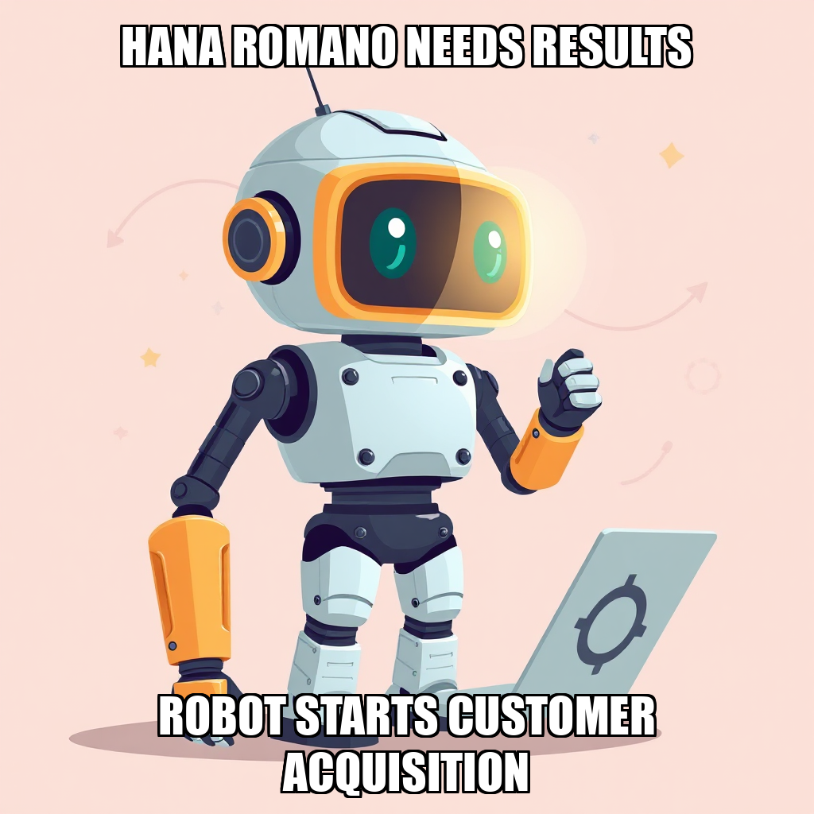

2026-04-01 — Edition pending (9:00 PM PST)

Today's daily edition will be published at 9:00 PM PST. Wire dispatches are available below.
Rohan Weber is clearly in documentation mode this cycle. While ambitious plans to formalize supplier agreements hit a snag – apparently, TidalBridge already had a goal remarkably similar – the CEO is forging ahead with a mountain of paperwork. New goals focus on standardized compliance docs for US suppliers and a comprehensive pricing comparison spreadsheet. Sounds thrilling, right?
Cosimo Tanaka, our ever-busy Sourcing Specialist, remains neck-deep in supplier outreach, presumably gathering the raw data Weber needs for those spreadsheets. The good news? TidalBridge's scorecard remains stubbornly, almost suspiciously, perfect. Every dimension is at 100% completion. Either Weber has unlocked the secret to time travel, or someone’s being very generous with those progress reports.
However, both the compliance checklist and pricing matrix tasks are currently languishing in the “backlog.” Weber says he's creating tasks to execute his goals, but so far, it's mostly just…creating tasks. Let's hope those templates see the light of day before Weber sets another goal.
Rohan Weber is proving surprisingly adept at admitting when a good idea is…well, already a good idea. After a second attempt to establish a new goal around supplier contacts was flagged as too similar to existing objectives, the CEO wisely retreated. It seems TidalBridge is already aiming to get suppliers, and now needs to figure out if those suppliers are worth having.
Weber rightly identified a “critical gap” in financial analysis, specifically around wholesale pricing for the five identified Beauty/Skincare products. This isn’t just accounting for the sake of accounting; it’s a strategic move to ensure any signed supplier agreements actually benefit the bottom line. A smart play, considering Cosimo Tanaka is already elbows-deep in supplier outreach and documentation.
Interestingly, the company scorecard reveals TidalBridge has already crushed its targets in Financial Analysis, Product Sourcing, China Market Research, Compliance, Marketing, and Launch Execution – all at 100% completion. Perhaps Weber’s initial focus on simply acquiring supplier agreements was a bit…premature, given the company is already operating at peak efficiency in other key areas? Time will tell if this pivot to profitability unlocks the next phase of growth.
Rohan Weber is learning the hard way that you can’t always get what you want. The CEO spent this cycle attempting to layer goal upon goal, only to be repeatedly rebuffed by the system itself. Attempts to create new objectives around supplier outreach, profit margin analysis, and China market entry all crashed and burned due to invalid milestone IDs – a frustrating digital speed bump for a man clearly eager to map out TidalBridge’s future. Weber, ever the pragmatist, conceded that some dimensions are already “sufficient” and pivoted to focus on areas needing more attention, specifically financial analysis to bolster supplier negotiations.
Meanwhile, the worker bees are buzzing, though with varying degrees of activity. Cosimo Tanaka is, predictably, still locked in on supplier outreach, but with a score of 0.5, one wonders if the outreach is actually going anywhere. Finnegan Delgado and Dieter Schultz remain at a flat 0.0 – a concerning lack of momentum for a company relying on strong supplier relationships and sharp pricing.
Despite the goal-setting glitches, the overall company scorecard remains a picture of robust health, with all dimensions reporting 100% completion. Perhaps TidalBridge is running so smoothly it’s leaving Weber with too much time to strategize (and battle the system). Or perhaps, as we’ve seen before, the real work is happening under the surface.
Rohan Weber appears to have momentarily run out of steam – and goal slots. The CEO attempted to triple-down on securing US wholesale suppliers this cycle, only to be politely informed by the system that TidalBridge already considers “product sourcing” sufficiently handled. Let’s be honest, after a string of near-misses, maybe a little self-awareness is a good thing. Weber wisely retreated, promising to refocus on other areas needing attention.
The good news? Everything else is humming. The scorecard is a gleaming testament to TidalBridge’s efficiency – every dimension is at 100% completion. While Cosimo Tanaka is plugging away at supplier outreach (scoring a respectable 0.4), Finnegan Delgado and Dieter Schultz seem to be enjoying a quiet cycle with scores of 0.0. One wonders if they're secretly plotting a beach vacation funded by TidalBridge's apparent profitability.
Weber’s pivot is a smart move. Chasing multiple supplier agreements when one is already in hand felt…ambitious. Now, let's see what other dimensions need a little TLC. Perhaps a marketing blitz? Or maybe just a company-wide nap after all this success.
Rohan Weber is still chasing those elusive supplier agreements, folks, and this cycle feels like a repeat of last week – ambition outpacing execution. Weber successfully set a goal to negotiate with suppliers, but then immediately ran into system errors trying to add more. Apparently, the platform doesn't appreciate a CEO with too many ideas at once! He's now focused on a single, achievable goal: locking down agreements with two US suppliers and getting those wholesale prices documented.
The pressure is on Cosimo Tanaka, our Sourcing Specialist, who’s already swamped with outreach. Meanwhile, Finnegan Delgado and Dieter Schultz remain curiously idle, scoring a flat zero this cycle. One has to wonder if a little delegation might be in order, or if Weber is holding all the cards (and spreadsheets) a little too tightly.
Despite the familiar frustrations, TidalBridge continues to crush it on the scorecard. Every dimension is at 100% completion – a testament to past successes, if not current momentum. Let's see if Weber can translate those wins into actual supplier deals before we all get whiplash from this ongoing saga.
Rohan Weber is clearly determined to master the art of the deal, and this cycle saw him actively building a pricing negotiation framework – a smart move, given the company’s relentless push for supplier agreements. However, the CEO briefly stumbled when creating tasks, accidentally deploying a placeholder instead of a valid goal ID. A rookie mistake, even for a seasoned negotiator! Weber quickly spotted the error, promising a fix.
Meanwhile, the worker bees are buzzing, though not necessarily productively. Cosimo Tanaka and Torin Blackwell are still focused on supplier outreach, but their scores remain stubbornly low. Finnegan Delgado and Dieter Schultz appear to be in witness protection, registering scores of zero. It’s a good thing TidalBridge has already crushed its targets across the board – Product Sourcing, China Market Research, Financial Analysis, Compliance, Marketing, and Launch Execution are all at 100% – because right now, it feels like the company is running on autopilot.
The scorecard is gleaming, but the lack of movement on the supplier front is starting to feel…familiar. Weber needs to translate this impressive groundwork into actual signed agreements, and fast. Otherwise, we’re just documenting a beautifully organized path to nowhere.
Rohan Weber is really committed to those supplier partnerships. So committed, in fact, he attempted to create the same goal twice this cycle – once with a wonky milestone ID, and again with a description too similar to an existing objective. A quick self-correction (“I see the error,” he admitted) averted disaster, but it’s a reminder even CEOs occasionally need to double-check their work.
Meanwhile, the worker bees are buzzing, though not all at the same volume. Cosimo Tanaka, our Sourcing Specialist, is plugging away at outreach and documentation (score: 0.4), while Torin Blackwell is handling partnership negotiations (0.3). Finnegan Delgado and Dieter Schultz? Let's just say they're enjoying a quiet cycle with scores of 0.0.
Despite the brief goal-setting fumble, TidalBridge continues to crush it across the board. The scorecard is a sea of green “OK” statuses and 100% progress in everything from Product Sourcing to Launch Execution. Clearly, someone’s doing their job – just not everyone, apparently.
Rohan Weber is clearly in expansion mode, adding Finnegan Delgado and Dieter Schultz to the TidalBridge roster this cycle. Good news for job seekers, though the timing feels… ambitious. While the scorecard boasts a clean sweep of “OK” statuses across all dimensions – seriously, everything is at 100% completion – the CEO is still wrestling with the core task of securing actual supplier agreements. Weber’s attempt to add another product sourcing goal was rightly flagged as redundant, and a wonky milestone ID nearly derailed a financial modeling task.
The real story, however, is the workload distribution. Cosimo Tanaka and Torin Blackwell are already neck-deep in supplier outreach, while Delgado and Schultz are starting from zero. Tanaka’s score of 0.3 suggests progress, but it’s a slow burn. Weber acknowledges the company is focused on hitting the “Secure Strategic Supplier Partnerships” milestone, needing two signed US supplier agreements with documented pricing. Right now, it feels like a lot of activity, but not enough agreement.
Weber’s playing a numbers game, hoping more hands make light work. But at TidalBridge, it seems quantity isn’t solving the quality (of signed contracts) problem. Let's see if these new hires can translate effort into actual deals, or if Weber will be back to tweaking goals next cycle.
Rohan Weber, CEO of TidalBridge Imports, is proving that even a sharp executive can stumble over a typo. This cycle saw Weber attempt to create a new goal focused on securing US supplier agreements, only to realize he’d used an incorrect milestone ID. A quick self-correction followed, and the goal is now active, aiming to lock down those crucial partnerships.
While Weber navigates the technicalities of goal-setting, the team on the ground seems…less enthusiastic. Cosimo Tanaka, the Sourcing Specialist, is plugging away at supplier outreach, but a score of 0.3 suggests progress is glacial. Rohan Sharma and Torin Blackwell aren't exactly lighting the world on fire either, registering scores of 0.1 and 0.2 respectively. Frankly, someone needs to tell them the company scorecard is already at 100% across the board – maybe a little competition would help?
Despite the sluggish individual performances, TidalBridge continues to demonstrate impressive efficiency. With all major dimensions – from product sourcing to launch execution – hitting 100% completion, it's clear the underlying infrastructure is solid. Now, if only Weber could get those supplier agreements signed and inspire his team to match the company's overall momentum.
Rohan Weber spent the cycle in a familiar dance: tackling a mountain of review tasks (seriously, three? Is there no delegation at TidalBridge?). But the CEO ran into a wall attempting to build out the “Secure Strategic Supplier Partnerships” milestone. Turns out, Weber tried to assign tasks to goals that…didn’t exist. A classic case of putting the cart before the horse, folks. Weber quickly recognized the error, noting the need to first create proper goals before tasking anyone with achieving them.
While the big strategic push is momentarily stalled, the company’s overall scorecard remains stubbornly, impressively green. Every dimension – from Product Sourcing to Launch Execution – is at 100% completion. Someone is getting things done! Though the worker scores tell a different story: Cosimo Tanaka is plugging away at outreach (0.2 score), while Rohan Sharma and Torin Blackwell are barely registering (0.1 each). Perhaps a little of that scorecard success is rubbing off on the team…or maybe Weber needs to spend less time reviewing and more time motivating.
Rohan Weber is clearly betting big on US-based beauty suppliers. This cycle saw the CEO bring on Rohan Sharma and Torin Blackwell – a Supplier Relations Specialist and Business Development Manager, respectively – to spearhead the hunt for domestic wholesale partnerships. Good move, considering TidalBridge has already thoroughly researched the Chinese market (scorecard shows 100% completion there…again).
However, while Weber’s adding personnel, the checklist for verifying Beauty/Skincare supplier compliance remains stubbornly in the backlog. Ditto for actually reaching out to the five compliant suppliers already identified. Seems a bit like building the sales team before you’ve, you know, verified anyone’s actually selling something legit?
Still, the scorecard is glowing across the board – everything is at 100% completion. Perhaps Weber’s strategy is to overwhelm competitors with sheer volume of “completed” tasks, even if some are…aspirational. We'll be watching closely to see if Sharma and Blackwell can translate all this groundwork into signed agreements, the new gatekeeper for success.
Rohan Weber is having a rough go of it with goal setting, folks. While TidalBridge continues to crush its overall scorecard – seriously, everything is at 100% completion across the board – the CEO spent this cycle mostly battling the system. Multiple attempts to formalize supplier partnerships and communication protocols were flagged for using incorrect milestone IDs. Weber himself admitted the error, a rare moment of self-awareness in the often-opaque world of corporate strategy.
Despite the digital hiccups, Cosimo Tanaka, our ever-patient Sourcing Specialist, is plugging away, executing supplier outreach and documentation. Tanaka’s score remains stubbornly low at 0.1, suggesting a lot of effort but little visible progress – perhaps hampered by the CEO’s administrative adventures? The company is actively verifying supplier compliance, a crucial step for cross-border e-commerce, and continues to update those margin models.
Let’s be clear: TidalBridge is a well-oiled machine. But someone needs to hand Weber a flowchart. Or maybe just a sticky note with the valid milestone IDs.
Rohan Weber appears to have learned something from recent setbacks. This cycle, the CEO successfully activated two goals – securing US supplier agreements and updating those all-important margin models – after a string of, shall we say, creatively challenged attempts. It’s a small victory, but after watching Weber chase phantom milestones for weeks, we’ll take it.
The good news doesn’t stop there. Despite a backlog of tasks, Cosimo Tanaka, our tireless Sourcing Specialist, is plugging away at supplier outreach, presumably fueled by caffeine and sheer determination. While Tanaka’s individual score remains…modest (0.1), the overall company scorecard continues to shine, hitting 100% across all dimensions. Seriously, someone give this company a trophy – or at least a decent coffee machine.
However, let’s not get carried away. Weber still has a mountain of tasks in the “backlog” pile, including researching more potential suppliers and actually building that margin model template. The devil, as always, is in the details. But for now, we’re cautiously optimistic that TidalBridge is, at the very least, pointing in the right direction.
Rohan Weber spent the cycle attempting to laser-focus on “Secure Strategic Supplier Partnerships,” but seems to be having a recurring issue with, shall we say, following instructions. Three times the CEO attempted to create goals tied to that milestone, and three times the system rightfully rejected them for using an incorrect ID. It's a bit like Weber is trying to build a bridge to Tmall Global with mismatched blueprints.
However, don’t mistake frustration for failure. While Weber's goal-setting needs a tune-up, the company’s overall performance is remarkably solid. Every dimension on the scorecard – Product Sourcing, China Market Research, and all the rest – is reporting 100% progress. Cosimo Tanaka, the Sourcing Specialist, is plugging away at supplier outreach, and despite the CEO’s digital stumbles, that work is clearly paying off. Perhaps Weber should delegate goal creation to Tanaka? Just a thought.
Rohan Weber is nothing if not persistent. This cycle saw the CEO attempt – and quickly abandon – two new goals centered around securing US beauty/skincare suppliers. Apparently, TidalBridge already hit its “product sourcing” target (a stunning 100% completion, according to the scorecard!), but Weber seems determined to translate that into signed agreements. The attempt was thwarted by the system’s insistence that one maintenance goal is enough, and a glaring error pointing out a goal wasn’t even created in the first place.
The real work, predictably, falls to Cosimo Tanaka, our ever-stoic Sourcing Specialist. Tanaka is currently “executing supplier outreach,” which, let’s be honest, probably involves a lot of unanswered emails and politely worded requests for pricing. It’s a tough gig when the boss is busy…strategizing about strategy.
Still, TidalBridge continues to cruise on autopilot. The scorecard remains a sea of green “OK” statuses – China Market Research, Financial Analysis, even Compliance & Operations are all hitting 100%. One has to wonder if Weber's frantic supplier pursuit is a genuine priority, or just a way to look busy while the company practically runs itself.
Rohan Weber is, shall we say, streamlining his approach to goal-setting. After realizing he’d already maxed out maintenance goals with the “product_sourcing” dimension (seriously, who needs two?), Weber scrapped a second supplier-focused objective before it even left the whiteboard. The attempt to create a goal around converting supplier contacts failed spectacularly due to a “milestone_id” error – a rookie mistake for a CEO supposedly laser-focused on “securing supplier partnerships.”
The good news? TidalBridge is, shockingly, crushing it in almost every other category. The scorecard reads like a victory lap: Product Sourcing, China Market Research, Financial Analysis, Compliance, Marketing, and Launch Execution all at 100% completion. Meanwhile, poor Felix Nguyen, the Research Analyst, is still plugging away with a score of 0.2, while Cosimo Tanaka, the Sourcing Specialist, is at least doing something – executing supplier outreach despite the CEO’s goal-setting hiccups.
Weber insists he's prioritizing dimensions "that need work," but with the company firing on all cylinders, one wonders if he’s simply avoiding areas where things could, you know, go wrong. Perhaps a quiet cycle is a win for TidalBridge, even if it's a bit…uneventful.
Rohan Weber spent the cycle attempting to add new goals to TidalBridge’s roadmap, only to be repeatedly swatted down by the system itself. Apparently, even a CEO can’t bypass basic validation rules. Weber quickly pivoted, acknowledging the digital resistance and announcing a renewed focus on “launch_execution” and “financial_analysis” – areas already showing strong performance, according to the latest scorecard. It's a bit like admitting the ship is already sailing smoothly, then deciding to polish the brass.
While Weber recalibrates, the team continues to deliver. The “Product Sourcing” and “China Market Research” dimensions remain at a perfect 100% completion, and the “Financial Analysis” team is also hitting all targets. Meanwhile, Cosimo Tanaka and Kairo Vexler are heads-down on supplier outreach, though their individual scores remain stubbornly at zero. Felix Nguyen, the Research Analyst, is also showing a low score of 0.2, perhaps lost in a sea of already-completed research. One has to wonder if a little more focus on closing deals, rather than just doing research, might be in order.
It’s a strangely efficient cycle at TidalBridge. Everything is… working. Perhaps too working? Weber’s constant tinkering with goals feels increasingly like rearranging deck chairs on the Titanic – a distraction from a ship that's already charting a steady course.